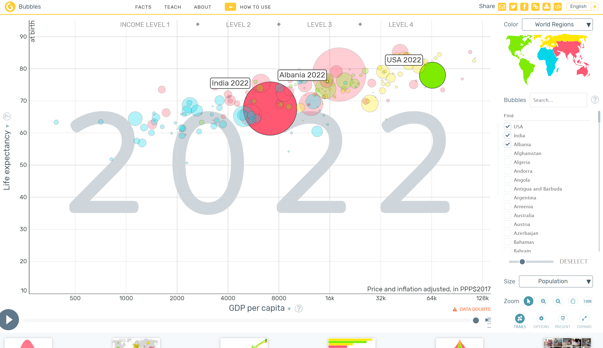

Gapminder Tools
Click here to go to website

Gapminder Tools is really cool because it’s all about making data easy to get into, even if you’re not a big stats person. The website is colorful and the charts are interactive, which means you can click around and see different stats change right before your eyes. This is super helpful for someone who wants to understand big concepts like global income distribution without getting bogged down in numbers. The interface is pretty user-friendly, with lots of bright colors and clear labels that make it fun to explore.
One thing that stands out with Gapminder Tools is how you can play with the data. You can change variables and see the world map update in real-time, which makes it feel like you’re really digging into the data. This not only makes the experience engaging but also helps you understand how different factors affect economic issues across countries. It’s a great tool for getting people interested in global economic disparities because it turns learning into a kind of game that’s both informative and interactive.